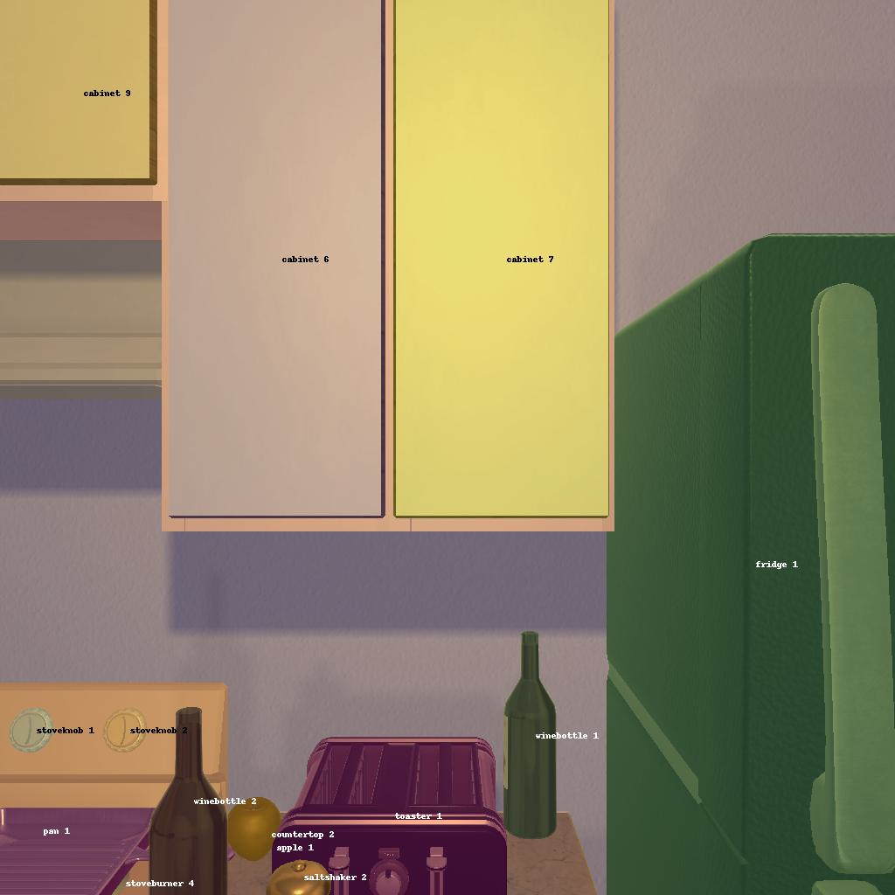
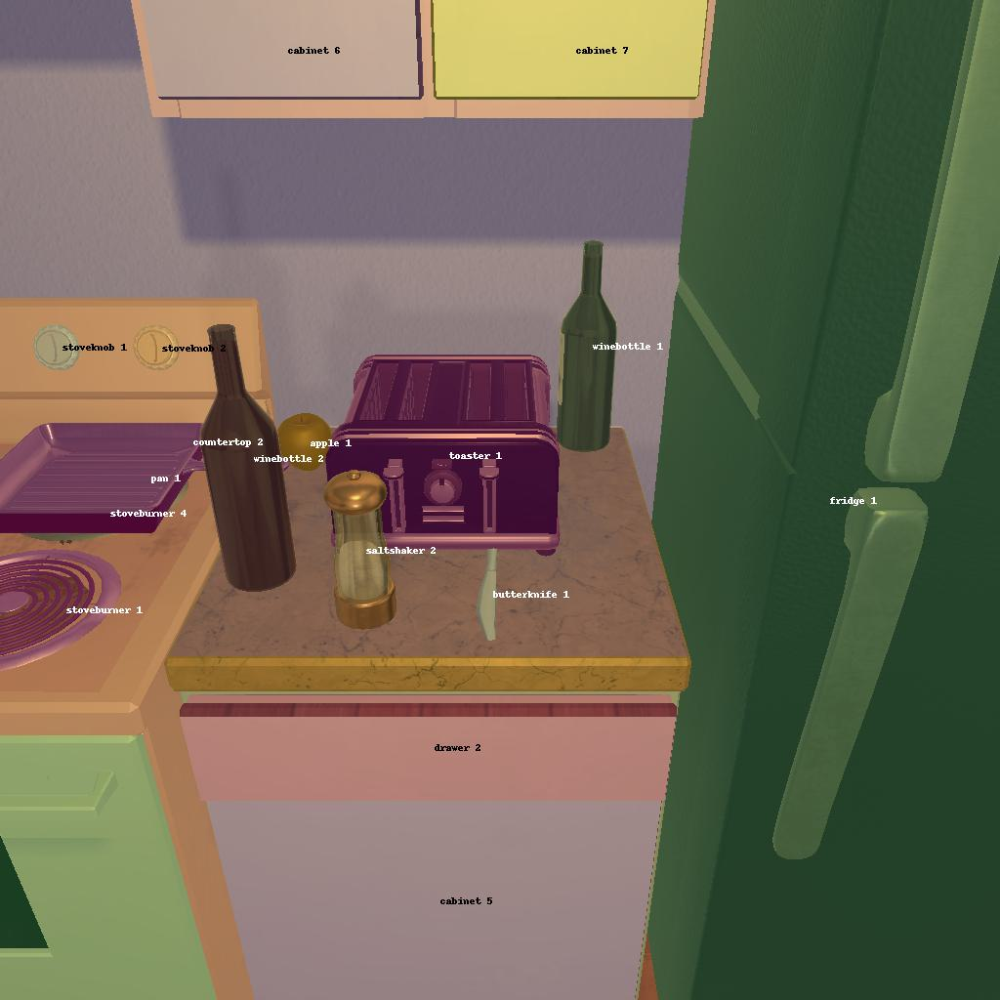
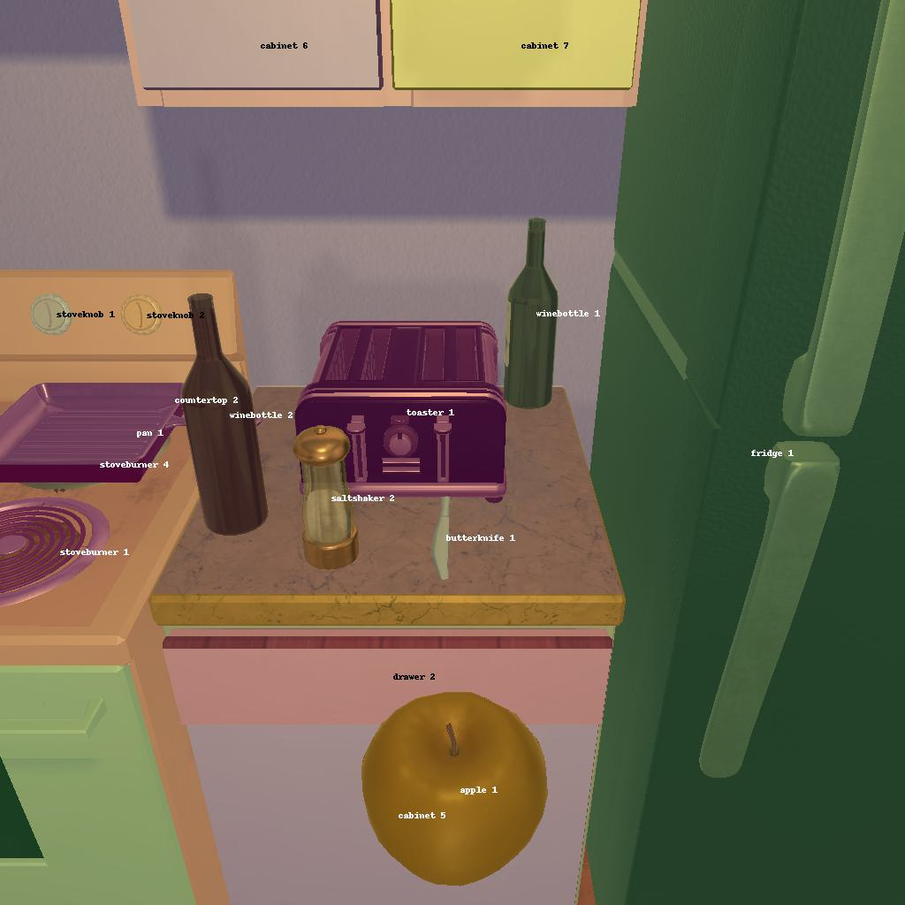

---------------------------------------------------------task: 14---------------------------------------------------------
--------------------------------------------------------------------------------------------------------------------------------------------------------------------
--------------------------------------------------------------------------------------------------------------------------------------------------------------------
Step:--------------------------------------------------------------------------10-------------------------------------------------------------------------------
----------------------------------------
VLM Prompt:
Image1:
Image2:
Image3:
**Instruction**
1. Analyze the provided image to identify all visible household objects, focusing on those relevant to the task description "put a cool apple in countertop."
2. Use the analysis of the image and the task hint "The agent must find an object of the desired type, pick it up, go to a fridge, cool the object with the fridge, then find the correct location to place it, and put it down there. The agent does not need to use the fridge button or open the fridge to cool the object, and the agent just needs to do action that is "cool the object with the fridge"." to answer the question: what is the most reasonable action in the choices for the task description "put a cool apple in countertop"?
4. Decide and write the answer using the template: The answer is: (i): , where i is the real number. If there is no desired object in the image, search every place based on **Initial Observation** to find the object. And if no one is exactly correct, choose a similar answer.
**Initial Observation**
You are in the middle of a room. Looking quickly around you, you can see microwave (1), countertop (1-2), cabinet (1-11), diningtable (1), drawer (1-3), sink (1), sinkbasin (1), toaster (1), stoveburner (1-4), fridge (1), coffeemachine (1), garbagecan (1)
**Answer Choices**
(1): go to microwave 1
(2): go to countertop 1
(3): go to cabinet 1
(4): go to diningtable 1
(5): go to drawer 1
(6): go to sink 1
(7): go to cabinet 2
(8): go to cabinet 3
(9): go to sinkbasin 1
(10): go to cabinet 4
(11): go to cabinet 5
(12): go to drawer 2
(13): go to toaster 1
(14): go to cabinet 6
(15): go to stoveburner 1
(16): go to fridge 1
(17): go to stoveburner 2
(18): go to stoveburner 3
(19): go to stoveburner 4
(20): go to drawer 3
(21): go to cabinet 8
(22): go to cabinet 9
(23): go to cabinet 10
(24): go to coffeemachine 1
(25): go to cabinet 11
(26): go to garbagecan 1
(27): put apple 1 in/on countertop 2
(28): examine apple 1
(29): examine countertop 2
**Answer**
Let's think step by step by following the instructions.
----------------------------------------
----------------------------------------
Original Response:
First, we need to identify all visible household objects relevant to the task "put a cool apple in countertop." In the images, we can see an apple (apple 1) on the countertop 2, and the fridge (fridge 1) is also visible.
Considering the task hint, the agent must find an apple, pick it up, go to a fridge, cool the apple with the fridge, then find the correct location to place it, and put it down there. Since we can already see the apple on the countertop and the fridge is also in the scene, the agent does not need to search for the apple.
Based on the Initial Observation, the agent is in the middle of the room with all the listed items around. The most reasonable action to accomplish the task would be to pick up the apple, cool it with the fridge, and then place it back on the countertop.
The action that matches this description from the given choices is to put the apple in/on the countertop after cooling it. However, there is no explicit action described as "cool the object with the fridge" in the choices. Therefore, the closest action that we can select which implies using the fridge to cool the apple would be:
The answer is: (27): put apple 1 in/on countertop 2
This action suggests that the agent will handle the apple (presumably cool it as per the task hint) and then place it onto countertop 2.
----------------------------------------
----------------------------------------
>>> Refine Original VLM Response and Get Pure Action: put apple 1 in/on countertop 2
This action suggests that the agent will handle the apple (presumably cool it as per the task hint) and then place it onto countertop 2
----------------------------------------
-----------------------------------------------------------------
Running time: 11.13051462173462 seconds
Total Money: 8.65709
-----------------------------------------------------------------
-----------------------------------------------------------------
Text Observation:You put the apple 1 in/on the countertop 2.
-----------------------------------------------------------------
UNSUCCEED